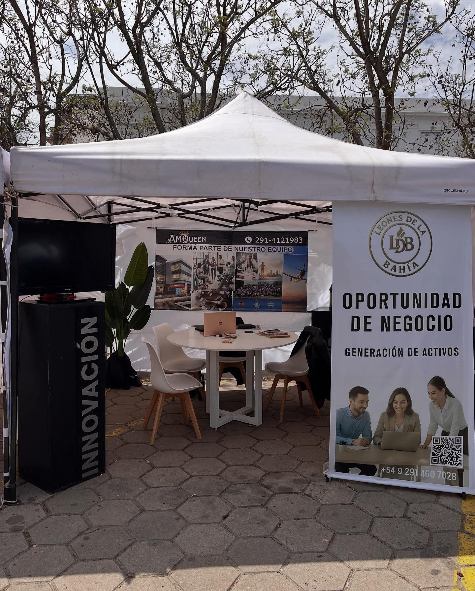
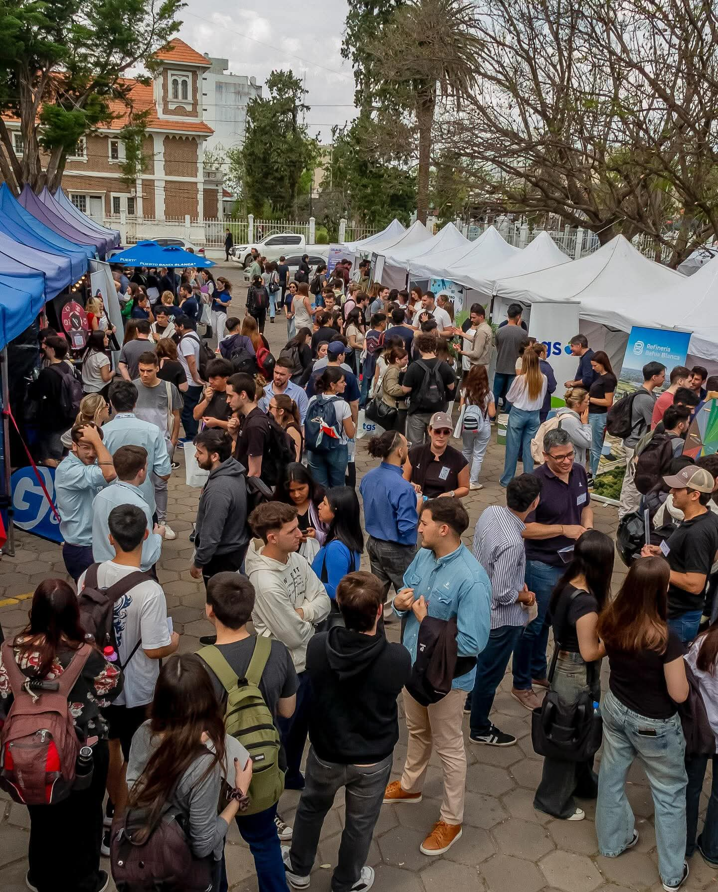
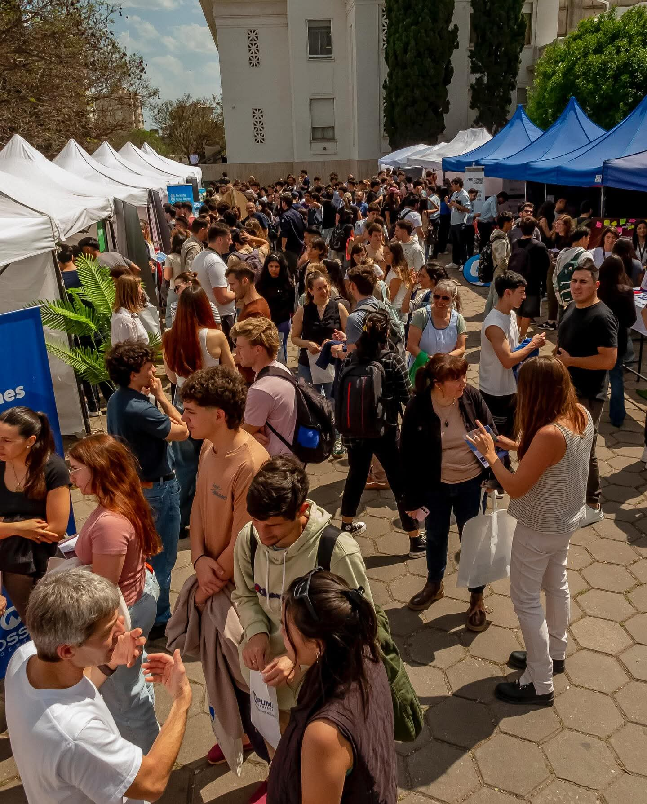
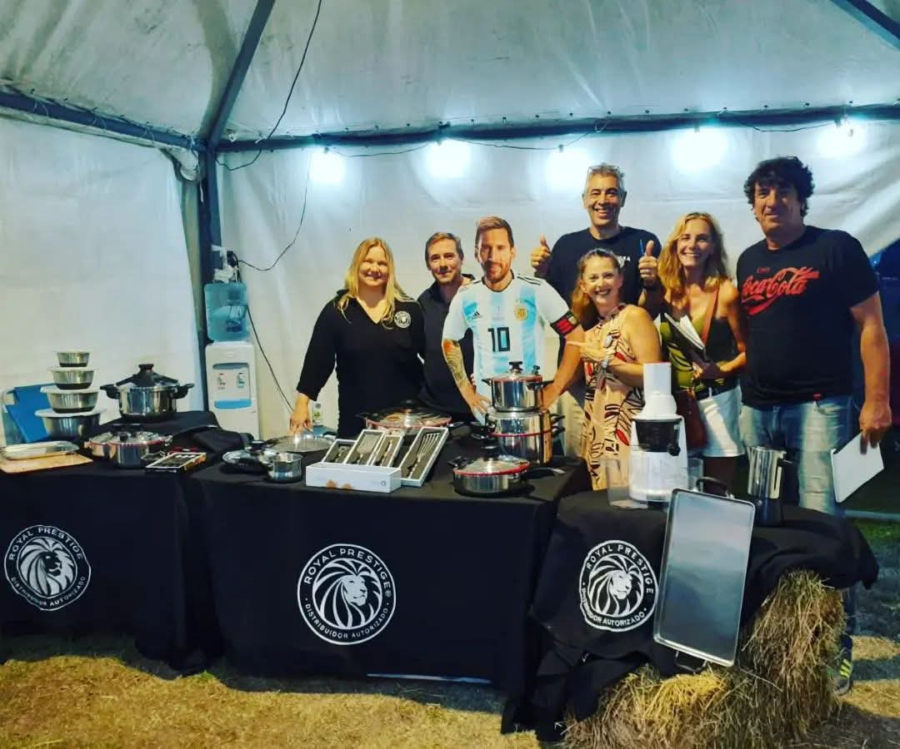

Leones de la Bahía
Como Leones de la Bahía, nos enfocamos en ofrecerte el universo de productos Royal Prestige a través de un canal exclusivo, marcando la diferencia respecto al comercio minorista tradicional. Al ser distribuidores autorizados independientes, llevamos la experiencia directamente a tu hogar mediante demostraciones culinarias gratuitas y personalizadas. Durante estos encuentros, nos dedicamos a mostrarte de manera práctica la alta tecnología, las ventajas y el funcionamiento real de cada pieza, asegurando que conozcas de primera mano cómo nuestras soluciones pueden transformar tu forma de cocinar y elevar el bienestar de tu familia.



Participación de LDB
En todo el sudoeste bonaerense existen importantes espacios donde la producción, el trabajo y el talento local se encuentran. Eventos referentes como la Muestra Comercial e Industrial de la Fiesta Provincial del Trigo en Tres Arroyos o la Exposición Rural en Bordeu funcionan como verdaderos motores para la región, reuniendo a empresas, pymes y miles de personas con ganas de crecer y descubrir nuevas oportunidades.
Para Leones de la Bahía, estas grandes muestras regionales representan el escenario perfecto para llevar nuestra visión más allá de Bahía Blanca. Nos sumamos a estos encuentros con el firme propósito de encender la chispa emprendedora en la zona, conectando con personas proactivas y jóvenes motivados que buscan una oportunidad real para aprender a emprender, desarrollar habilidades de liderazgo y formarse en la gestión de un negocio dinámico.
A través de nuestra presencia en estos eventos clave de la región, abrimos las puertas a quienes desean salir de la rutina laboral tradicional para construir su propio camino. Para nosotros es un orgullo representar una alternativa concreta de capacitación y crecimiento, apostando fuerte por el talento local y formando a la nueva generación de emprendedores de Bahía Blanca y toda la zona.

Leones de la Bahía - Feria del Trigo | Edición 2023
Feria de empleo
Las Jornadas de Empleo de la Universidad Nacional del Sur (UNS) constituyen el encuentro de empleabilidad más importante de Bahía Blanca y toda la región. Organizadas a través de la Secretaría de Cultura y Extensión Universitaria, este evento se ha consolidado como un espacio estratégico que conecta directamente el talento académico con las demandas y oportunidades del mercado laboral, reuniendo cada año a empresas de primer nivel y a cientos de estudiantes motivados por descubrir nuevos horizontes de desarrollo profesional.
En este marco de innovación y crecimiento, Leones de la Bahía tuvo el honor de formar parte de la Feria de Empleo UNS con un firme propósito: impulsar el espíritu emprendedor de la región. Durante la jornada, abrimos nuestras puertas a estudiantes avanzados y graduados apasionados por los desafíos, enfocando nuestro proceso de selección en la búsqueda de pasantes con un marcado interés por aprender a emprender, desarrollar competencias de liderazgo y conocer desde adentro la gestión de un negocio dinámico.
Nuestra participación nos permitió conectar de manera directa con jóvenes proactivos que buscan ir más allá del trabajo convencional, ofreciéndoles una experiencia práctica donde pueden capacitarse, adquirir herramientas clave de negocios y formar parte de una cultura enfocada en el crecimiento continuo. Para Leones de la Bahía, sumarnos a esta iniciativa representó una oportunidad invaluable para apostar por el talento local, brindando un entorno real de formación para las futuras generaciones de emprendedores de Bahía Blanca y la zona.